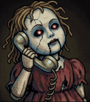

完整版 序章～終章
拉到最左邊＝關閉。iPhone 不能調音樂大小聲，只能開或關。
玩到的章節才會出現在這裡。
| 移動 | WASD／方向鍵（手機：左下搖桿） |
| 跑步（Shift） | 快，但腳步聲大，會消耗體力 |
| 蹲下（C） | 慢，幾乎沒有聲音，也比較不容易被看見 |
| 手電筒（F） | 看得清楚，但光線也會讓鬼發現你 |
| 調查／躲藏（E 或空白鍵） | 撿東西、開門，靠近草叢、垃圾桶、器材箱、桌子時可以躲進去 |
| 丟東西（1／2） | 1 丟空罐引開注意；2 丟鼈甲糖（點下方道具欄也可以） |
| 道具（3～7） | 3 繃帶回 2 心；4 能量飲料加速；5 護身符隱身；6 丟板擦讓鬼看不見；7 滅火器噴煙（手機點道具欄） |
| 憋氣（躲藏時按住 Shift） | 鬼靠近躲藏處時要憋氣，不然可能被聽到；憋太久會咳嗽（手機按住「跑」） |
| 手機（P 打開・Q 拍照） | 地圖：走過的地方會記下來；閃光：讓前方的鬼僵住、照出看不見的東西；記得切靜音，鈴聲會把鬼引來。電量在存檔點充電 |
| 道具選單（I／Tab） | 手機點下方「🎒 道具」。打開時時間會暫停，點道具直接使用；數字鍵 1～8 也能直接用 |
| 撒鹽（8） | 第四章：八尺大人靠近時撒鹽逼退她幾秒（地藏也要用鹽，省著用） |
| 恐懼值 | 鬼越近越高；太高畫面會扭曲、腳步變慢，滿了會忍不住叫出聲。待在亮處、保健室可以平復 |
鬼怪頭上出現「？」表示起疑，出現「！」就是被發現了，快跑或躲起來。被抓到時可以回答問題、反擊或丟東西爭取時間。
iPhone 的 Safari 不允許網頁自己全螢幕，
請把遊戲加入主畫面，從桌面圖示開啟就沒有網址列：
① 點下方工具列的 分享鍵 ⬆︎
② 選 「加入主畫面」
③ 回桌面點「夜校如月」圖示
手機另一頭的瑪莉，正一步步靠近。
第二章「七大不思議」製作中。
本作品含有恐怖內容
🎧 建議戴上耳機遊玩
點擊畫面進入 ― 帰れない放課後 ―